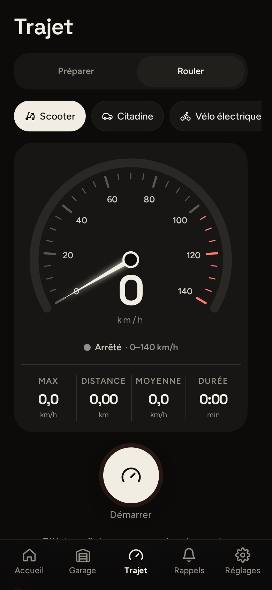
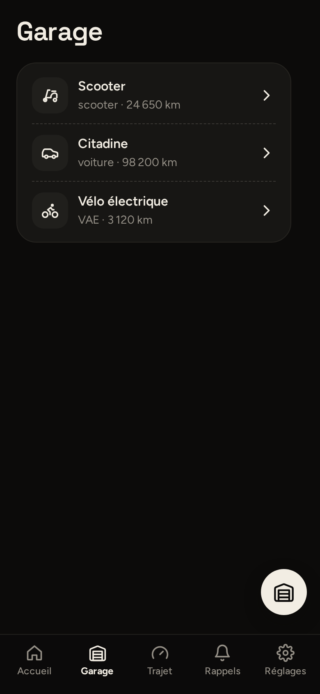

Entretien et rappels
Historique avec photo de facture. Rappels « km ou durée, le premier atteint », notifiés même app fermée.

Scooter, moto, voiture, camion ou vélo : Dia suit l'entretien, le carburant et les trajets. Hors ligne, sans compte, sans publicité.

Dia veut dire « trajet » en malgache. Pensée d'abord pour Madagascar, elle fonctionne partout.
Historique avec photo de facture. Rappels « km ou durée, le premier atteint », notifiés même app fermée.
2 champs sur 3, consommation, coût au km, autonomie selon ta jauge.

Vitesse, distance et tracé, même en arrière-plan.

Itinéraire, stations sur la route, alerte si un tronçon dépasse ton autonomie.

Problèmes, essais, réglages, configuration du véhicule.

Rien ne quitte le téléphone. Pas de serveur, pas de pisteur. Export JSON ou CSV quand tu veux.
ConfidentialitéType, énergie, compteur. Dia propose les bons rappels.
Quelques secondes à la pompe ou au garage.
Dia te prévient avant la vidange, les freins ou la courroie.
Un écran par besoin.
Tout dans la même app.



Scooter, voiture, vélo : chacun son compteur, ses rappels et ses dépenses.
Captures faites avec les données de démonstration.
Oui. Tout marche hors ligne, sauf le fond de carte et la préparation d'un trajet, qui ont besoin du réseau au moment de la recherche.
Oui : pas de publicité, pas d'abonnement, pas de version payante. L'app vit grâce aux dons de ceux qui le souhaitent.
Uniquement sur ton téléphone. Aucun compte, aucun serveur Dia. Pense à exporter une sauvegarde (Réglages) avant de changer de téléphone.
Android 7 ou plus récent. Pas de version iPhone pour l'instant.
Scooter, moto, voiture, utilitaire, camion, vélo et vélo électrique, autant que tu veux.
Pas de pub, pas d'abonnement, pas de données revendues. Si l'app t'est utile, un petit don aide à la maintenir. MVola ou carte bancaire, montant libre.